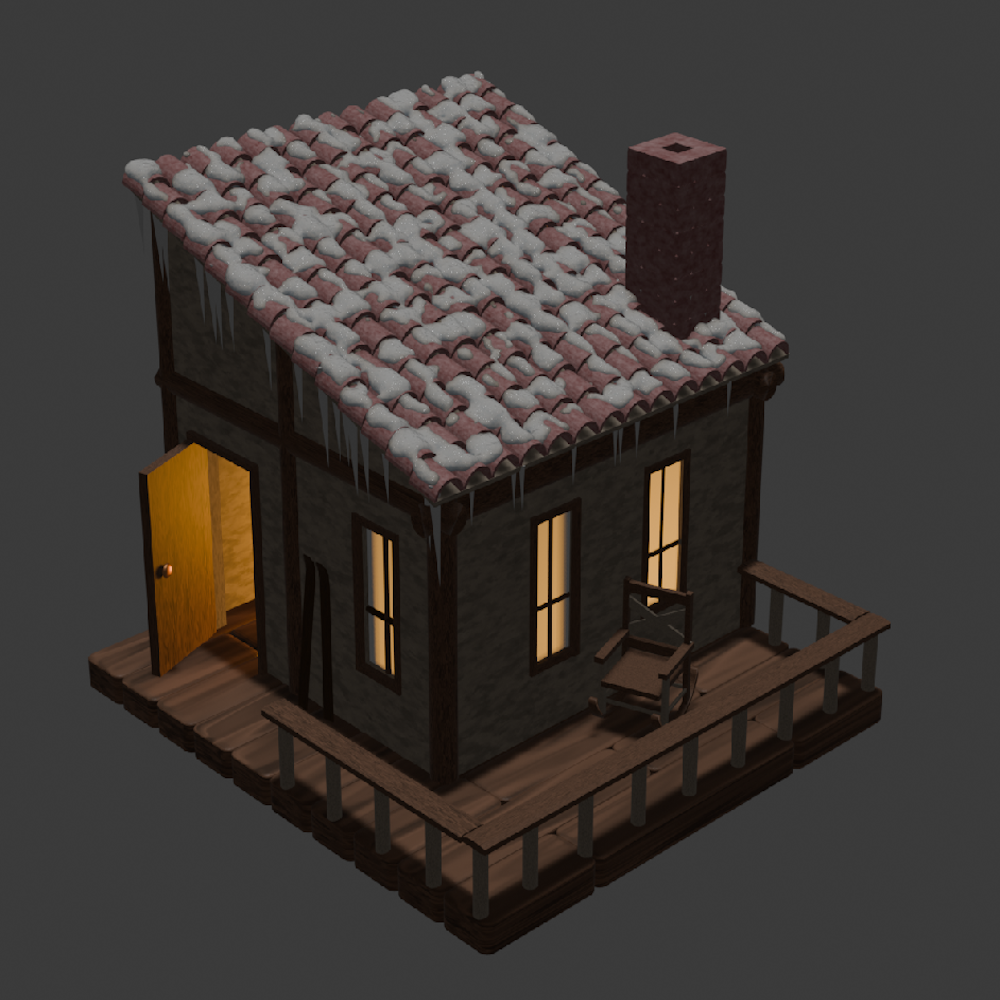

A friend of mine did some fantasy weapon sketches for a game we were working on. Although my background is mostly in Blender modeling, at the time I was also experimenting with CAD for 3D printing purposes. This was the result.
This is a render of an asset for a game I've been working on set in the Great White North. It uses purely procedurally generated textures because Adobe Substance Painter is expensive and I'm a better programmer than I am artist. Certain aspects like the snow and icicles are also procedural, which has been very useful for other parts of the game.